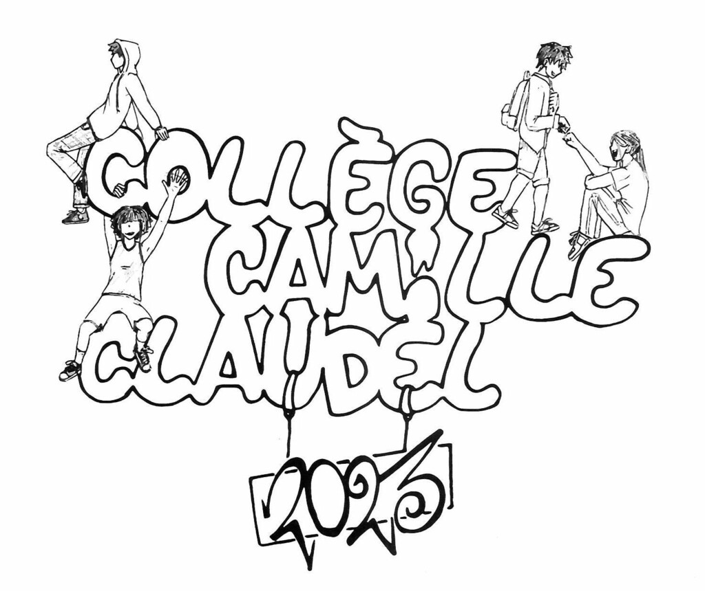

🌼 Connect Newsletter #17 - avril 2023
Bienvenue à Connect #17 ! Nous avons pris l’habitude de commencer par les mots "ce fut un mois chargé à Claudel" et ce mois-ci c’est bien toujours le cas ! Le collège a accueilli les visiteurs d'un pays lointain, il y a eu les conseils d'administration et de la vie collégienne , ainsi que de nombreuses sorties scolaires , le brevet blanc , les eco-délégues se préparent , la chorale chante et nous avons des gagnants à vous annoncer pour le concours d’Objet Trouvé et aussi pour le nouveau logo du collège !
🎄Dans cette édition:
⁉️Connaissez vous…..
🥂 Invitation à la Halle Tropisme le 26 mai
🦸🏽♀️Un mot d’Irène, une éco-deléguée
👕Le tee-shirt Camille Claudel 2022-23
👨🏽💻Un Conseil d’Administration au mois d’avril
🇦🇺🦘Les australiens chez nous !
🧑🤝🧑Les 6èmes au conseil municipal !
🧑🏽🚒👨🏽💻👩🏽✈️👮🏽♀️Journée du forum des métiers
✋🏽🤔 La sensibilisation au gaspillage alimentaire
🎭Sortie au théatre d’Ô des 6emes
🎶 Des Nouvelles de la Chorale
🦸🏽🦸🏽♀️ CVC au collège
🎦🎭🎶4emes au ciné-spectacle
🗓️ Dates importantes pour vos agendas
🏆 Concours : Objet Trouvé
❤️Et finalement
🥂 Invitation à la Halle Tropisme le 26 mai
🦸🏽♀️Un mot d’Irène, une éco-deléguée
👕Le tee-shirt Camille Claudel 2022-23
👨🏽💻Un Conseil d’Administration au mois d’avril
🇦🇺🦘Les australiens chez nous !
🧑🤝🧑Les 6èmes au conseil municipal !
🧑🏽🚒👨🏽💻👩🏽✈️👮🏽♀️Journée du forum des métiers
✋🏽🤔 La sensibilisation au gaspillage alimentaire
🎭Sortie au théatre d’Ô des 6emes
🎶 Des Nouvelles de la Chorale
🦸🏽🦸🏽♀️ CVC au collège
🎦🎭🎶4emes au ciné-spectacle
🗓️ Dates importantes pour vos agendas
🏆 Concours : Objet Trouvé
❤️Et finalement
⁉️Connaissez vous…..
Félicitations à Iban Consejo 6D qui a répondu rapidement et correctement au dernier concours d’Objet Trouvé en identifiant Mme Comara , notre professeure de SVT, qui se cachait derrière une cagoule bleue dans ce paysage enneigé. Iban recevra son prix doré après les vacances !
“J'enseigne au collège Camille Claudel depuis 22 ans! Le collège a bien changé depuis mon arrivée. Le bâtiment B était très ancien, le A n'existait pas et il y avait des préfabriqués dans la cour. J'ai assisté à de nombreuses changements : la construction du bâtiment A , la rénovation totale du B et la mise en valeur de nos beaux cèdres pluri-centenaires. J'y ai mis mon grain de sel avec la réalisation du jardin avec des élèves qui sont maintenant en terminale. Je ne me vois pas être ailleurs, j'ai mis le "grappin "sur la salle B16. J'ai toujours plaisir à enseigner, à créer des projets avec mes éco- jardiniers. Je compte bien y rester encore un peu... un peu plus que prévu”.
Agnès Comara - professeure de SVT
🥂 Invitation à la Halle Tropisme le 26 mai
Chaque mois, nous proposons une rencontre à vous tous, les membres du collège, pour faciliter l’échange entre des différentes personnes de notre communauté scolaire, dans un contexte convivial et amical, où nous pouvons nous détendre un peu et bavarder ! Si vous vous sentez un peu timide, invitez un(e) ami(e) à vous rejoindre et venez ! Vous rencontrerez toujours quelqu'un de nouveau et c'est toujours une bonne chose !
Vous êtes donc toutes et tous les bienvenus à la Halle Tropisme le 26 mai à partir de 19h00.
Marquez la date dans vos agendas dès maintenant !
🦸🏽♀️Un mot d’Irène, une éco-deléguée
A Camille Claudel, les écodélégués sont élus chaque année dans chaque classe. Nous nous réunissons tous les jeudis pendant la pause déjeuner en salle B16. Mme Comara, la professeure de SVT, nous encadre et supervise la mise en place de nos idées. En ce moment, nous organisons la "Journée verte" qui est un projet sur lequel nous travaillons depuis plusieurs mois. Nous allons y organiser des jeux et des activités sur le recyclage du plastique. Le message que nous essayons de faire passer est que le plastique est très difficile à recycler. La plupart des plastiques sont décyclés, c’est-à-dire qu'ils sont utilisés pour faire partie d’autre chose. Les plastiques recyclés sont utilisés pour fabriquer un tout nouvel objet à partir de la totalité de ce qu'ils sont. En fait, une bouteille en plastique ne peut être recyclée en une nouvelle bouteille en plastique seulement trois ou quatre fois, puis c'est fini ! Contrairement au verre qui peut être recyclé à 100 % et à l'infini. La plupart des autres déchets plastiques sont enfouis (enterrés) ou incinérés (brûlés). L'objectif des éco-délégués est de rendre l'école plus éco-responsable et de moins contribuer à la pollution de la planète.
Irene 5B
👕Le tee-shirt Camille Claudel 2022-23

Couleur du tee-shirt à décider
Un grand bravo et nos félicitations à Basile Gaillard 4C et Abel Battista 4B ayant remporté le vote pour ce magnifique nouveau logo du tee-shirt du collège Camille Claudel 2023. Ceci est un bel exemple de travail collaboratif et franchement, nous sommes tous et toutes très impressionné.e.s !
Le tee-shirt sera mis en vente dans quelques jours : nous vous communiquerons le lien pour l'acheter.
Merci aux professeurs d'arts plastiques d'avoir facilité la réalisation de ce projet !

Les 4 autres dessins finalistes
👨🏽💻Un Conseil d’Administration au mois d’avril
La rue. Marcher dans la rue. Arriver. Collège. Salle de permanence. Bonjour, ça va ? Et toi ?
Oui ? Et vous ? Non. C’est ça ? C’est la vie. Se taire. S’asseoir. Feuille d’émargement.
Signer. Silence. Commencer. Parler. Un peu. Se taire. CA de février. Approuver. Unanimité.
Compte-rendu exercice 2022. Écouter. Compte-rendu des comptes. Conte des comptes du
décompte. Restauration. Cantine. Gymnase. Filets de hand-ball. Location. Travaux. Fond
social. Voyages. Théâtre. Citoyenneté. Cinéma. Pass’Culture. Shakespeare. Se taire.
Silence.
Arrivée de l’homme comptable 5 collèges. Parole. Recommencer. Écouter. Analyser.
Analyse du compte-rendu. Conte de l’analyse du compte-rendu des comptes. Réécouter.
Auto-financement. Encaissable / non encaissable / amortissement / charge réelle : 97 jours !
L’homme comptable remarque que « la situation de la gestion du collège est tout à fait
saine. » Inventaire des objets. Des meubles. Des personnes. Des fonctions. Des élèves.
Anciens. Nouveaux. Célèbres. Ou pas. Écouter. Se taire. Encore. Approuver. Approuver les
comptes et le compte des contes. Unanimité. Sortie de l’homme comptable 5 collèges.
Approuver les projets d’amélioration de l’environnement du collège. WC. Nouveau préau.
Cour végétalisée. Adaptation au réchauffement climatique. Les ralentisseurs. Sécurité.
Approuver.
Approuver que le collège soit une communauté. Enfants. Enseignants. Parents. Personnel.
Approuver un vide-grenier. Approuver pour les enfants. Pour l’avenir. Approuver.
Approuver les voyages qui forment la jeunesse. Approuver de donner du bien-être.
Approuver le yoga. Du temps pour le corps. Le temps de vivre. La sensation de la vie.
Approuver.
Approuver d’apprendre en s’amusant. D’apprendre en faisant. D’apprendre en vivant.
D’apprendre tout le temps de sa vie. Approuver. C’est la vie. C’est ça.
Finir. Se lever. Marcher. Sortir. Partir. Marcher dans la rue.
Oui ? Et vous ? Non. C’est ça ? C’est la vie. Se taire. S’asseoir. Feuille d’émargement.
Signer. Silence. Commencer. Parler. Un peu. Se taire. CA de février. Approuver. Unanimité.
Compte-rendu exercice 2022. Écouter. Compte-rendu des comptes. Conte des comptes du
décompte. Restauration. Cantine. Gymnase. Filets de hand-ball. Location. Travaux. Fond
social. Voyages. Théâtre. Citoyenneté. Cinéma. Pass’Culture. Shakespeare. Se taire.
Silence.
Arrivée de l’homme comptable 5 collèges. Parole. Recommencer. Écouter. Analyser.
Analyse du compte-rendu. Conte de l’analyse du compte-rendu des comptes. Réécouter.
Auto-financement. Encaissable / non encaissable / amortissement / charge réelle : 97 jours !
L’homme comptable remarque que « la situation de la gestion du collège est tout à fait
saine. » Inventaire des objets. Des meubles. Des personnes. Des fonctions. Des élèves.
Anciens. Nouveaux. Célèbres. Ou pas. Écouter. Se taire. Encore. Approuver. Approuver les
comptes et le compte des contes. Unanimité. Sortie de l’homme comptable 5 collèges.
Approuver les projets d’amélioration de l’environnement du collège. WC. Nouveau préau.
Cour végétalisée. Adaptation au réchauffement climatique. Les ralentisseurs. Sécurité.
Approuver.
Approuver que le collège soit une communauté. Enfants. Enseignants. Parents. Personnel.
Approuver un vide-grenier. Approuver pour les enfants. Pour l’avenir. Approuver.
Approuver les voyages qui forment la jeunesse. Approuver de donner du bien-être.
Approuver le yoga. Du temps pour le corps. Le temps de vivre. La sensation de la vie.
Approuver.
Approuver d’apprendre en s’amusant. D’apprendre en faisant. D’apprendre en vivant.
D’apprendre tout le temps de sa vie. Approuver. C’est la vie. C’est ça.
Finir. Se lever. Marcher. Sortir. Partir. Marcher dans la rue.
Mr Edgar
*Si vous souhaitez obtenir plus de détails sur la réunion du CA qui s'est concentrée sur les finances du collège, vous pouvez demander au collège une copie du procès-verbal de la réunion. Voici un lien vers les questions posées par les parents d'élèves.
🇦🇺🦘Les australiens chez nous !
Nous avons eu la chance d’accueillir au collège des australiens de passage dans notre ville pendant quelques jours ! Les élèves de 3D LCE anglais avaient au préalable échangé avec eux par lettres pour faciliter les retrouvailles le lundi 3 avril au matin.
Les australiens ont également échangé avec les 4ème et 3ème SI. Ils nous ont montré des vidéos/ photos de leur pays, ont évoqué la vie de leur établissement, les traditions et cultures de leur région. Puis ils ont observé deux demi-journées de cours, le lundi après-midi et le mardi matin, pour que chaque classe puisse profiter de leur présence au collège.
Le mardi midi, ils ont pique-niqué avec les 3D, puis l’après-midi, les 3D avaient préparé une visite guidée en anglais du centre ville de Montpellier. Les australiens ont été sous le charme de notre écusson !
Nous avons fini par un goûter très convivial dans le jardin du Peyrou, et enfin sur notre chemin du retour pour rentrer au collège, nous sommes tombés sur le maire Monsieur Delafosse, avec qui nous avons fait une photo et échangé quelques mots.
Ces deux journées furent riches pour nos jeunes en échanges et ils ont pu pratiquer leur anglais. Certains se sont même retrouvés le mercredi après-midi en ville, après les cours, pour profiter du dernier jour des Australiens sur Montpellier.
Nous en garderons un superbe souvenir !
Cindy Castes , professeure d’Anglais
🧑🤝🧑Les 6èmes au conseil municipal !
Le 13 avril dernier, les 6A ont investi la salle du conseil municipal de la mairie de Montpellier. Après avoir mené une campagne assidue, les 2 candidats qui se sont présentés pour devenir maire ont assisté à l'élection de l'un d'entre-eux. Et c'est Amine qui a eu l'honneur de recevoir l'écharpe tricolore des mains du doyen de l'assemblée, Kévin. Monsieur le maire a alors mené les débats qui opposaient 2 projets liés à l'environnement. Le premier défendait l'idée d'une police municipale de la Nature qui verbaliserait les gens qui ne respectent pas cette dernière. Le second projet envisageait de végétaliser toute la ville de Montpellier, les rues, les cours d'école, les immeubles. Après d’âpres discussions, c'est le premier projet qui a été voté. Les élèves ont ainsi découvert en prise directe ce qu'est la démocratie municipale !
Sophie Armengol , professeure d’histoire géographie
🧑🏽🚒👨🏽💻👩🏽✈️👮🏽♀️Journée du forum des métiers
Cette semaine à Claudel a eu lieu la journée des forum de métiers. Une dizaine de parents issus de différents domaines ont pris le temps de présenter aux classes de 3èmes un aperçu de leur travail. Nous remercions les parents suivants d'avoir partagé leur expérience avec nous.
C'est la troisième édition du forum des métiers à laquelle je participe. J'ai toujours le même plaisir à entendre l'invitation des élèves de 6ème qui nous appellent en amont de l'événement. Ils nous sollicitent pour que nous expliquions notre métier à des élèves de 3ème. Ils nous reçoivent à l'entrée de l'école. Leur implication à cet événement est très communicative.
La matinée du jour J, les dix parents qui présentent leur métier sont invités à partager un petit déjeuner préparé par les élèves de 6ème en guise d'accueil. Nous enchaînons ensuite quatre présentations de notre métier devant quatre classes de 3ème.
Après la pose café de 10h, nous répétons l'exercice une deuxième fois jusqu'à midi, puis nous sommes invités à boire un cocktail préparé par M. Cacciatore accompagné de gâteaux salés préparés par les élèves de 6ème.
Après la pose café de 10h, nous répétons l'exercice une deuxième fois jusqu'à midi, puis nous sommes invités à boire un cocktail préparé par M. Cacciatore accompagné de gâteaux salés préparés par les élèves de 6ème.
Je trouve très intéressant que les élèves puissent découvrir tous ces métiers dans ce laps de temps très court.
Ce que j'ai apprécié à l'issue de mes huit présentations, c'est le calme, l'attention des élèves et certaines questions pertinentes. Et qui sait, peut-être que je vais faire naître quelques vocations d'architecte d'intérieur !
Merci à M. Cacciatore pour l'organisation de cet événement.
Emmanuel Magnin , parent d’élève
Pour la deuxième année consécutive, je suis invité par Mr Cacciatore à participer au forum des
métiers du Collège Camille Claudel. A 7h55 je suis accueilli devant le collège par les élèves qui me
mènent jusqu'à une salle de cours où je peux rencontrer Mr Cacciatore. Ce dernier coordonne les
enfants afin qu'ils accueillent chaque parent participant au forum des métiers. Tout est parfaitement
organisé, certains élèves ont pour mission d'aller chercher les parents devant le collège et de les
orienter à l'intérieur de l'établissement pendant que d'autres préparent la collation d'accueil. Le
buffet est composé de jus de fruit, de café ainsi que des tartes et des gâteaux amenés par les
enfants, tous aussi appétissants les uns que les autres.
métiers du Collège Camille Claudel. A 7h55 je suis accueilli devant le collège par les élèves qui me
mènent jusqu'à une salle de cours où je peux rencontrer Mr Cacciatore. Ce dernier coordonne les
enfants afin qu'ils accueillent chaque parent participant au forum des métiers. Tout est parfaitement
organisé, certains élèves ont pour mission d'aller chercher les parents devant le collège et de les
orienter à l'intérieur de l'établissement pendant que d'autres préparent la collation d'accueil. Le
buffet est composé de jus de fruit, de café ainsi que des tartes et des gâteaux amenés par les
enfants, tous aussi appétissants les uns que les autres.
C'est toujours enthousiasmant de voir les enfants s'activer avec envie dans les tâches qui leur sont
confiées par Mr Cacciatore. Tous, sans exception mettent du cœur à l'ouvrage. Sans avoir rencontrer les autres parents conférenciers du jour lors du petit déjeuner , j'apprends que l'un est
journaliste, une autre instructrice de pilote d'avions, un autre vigneron, ou un autre chercheur .
Une fois que tous les participants sont arrivés, à 8h20 nous sommes accompagnés par les élèves
dans la salle où nous allons pouvoir présenter notre métier aux élèves de troisième. Les groupes se succèdent tous les 20 minutes accompagnés par un professeur.
confiées par Mr Cacciatore. Tous, sans exception mettent du cœur à l'ouvrage. Sans avoir rencontrer les autres parents conférenciers du jour lors du petit déjeuner , j'apprends que l'un est
journaliste, une autre instructrice de pilote d'avions, un autre vigneron, ou un autre chercheur .
Une fois que tous les participants sont arrivés, à 8h20 nous sommes accompagnés par les élèves
dans la salle où nous allons pouvoir présenter notre métier aux élèves de troisième. Les groupes se succèdent tous les 20 minutes accompagnés par un professeur.
Pour ma part, mon uniforme ne me permet pas de maintenir le mystère autour de la profession que
je vais présenter : les sapeurs-pompiers. A chaque groupe qui passe, il y a ceux qui sont particulièrement intéressés et d'autres plus rêveurs ou passifs, mais cela est toujours intéressant de pouvoir répondre aux questions d'adolescents en pleine scolarité. Les questions sont pertinentes malgré leur manque de maturité et c'est une vraie richesse de pouvoir parler de son métier sans filtre. Chaque élève note sur une feuille les réponses apportées à leurs questions. Les groupes s’enchaînent mais c'est différent à chaque fois, parfois les nombreuses questions m'empêchent de pouvoir suivre le plan que je me suis fixé.
je vais présenter : les sapeurs-pompiers. A chaque groupe qui passe, il y a ceux qui sont particulièrement intéressés et d'autres plus rêveurs ou passifs, mais cela est toujours intéressant de pouvoir répondre aux questions d'adolescents en pleine scolarité. Les questions sont pertinentes malgré leur manque de maturité et c'est une vraie richesse de pouvoir parler de son métier sans filtre. Chaque élève note sur une feuille les réponses apportées à leurs questions. Les groupes s’enchaînent mais c'est différent à chaque fois, parfois les nombreuses questions m'empêchent de pouvoir suivre le plan que je me suis fixé.
La matinée se termine et je n'ai pas vu le temps passé. A 12h20, le forum se termine et nous nous retrouvons, les intervenants, les enfants, Mr Cacciatore et Mr Anglade le principal du collège autour d'une collation à nouveau préparée par les enfants. C'est l'occasion pour les participants de faire part de leurs expériences de la matinée avec les élèves de 3ème ainsi que de leur satisfaction. Dans une ambiance conviviale, nous saluons la belle initiative de Mr Cacciatore d'organiser ce forum des métiers et de permettre aux élèves de 3ème qui vont bientôt devoir choisir leur orientation de découvrir des métiers.
Une fois de plus, j'ai pris un très grand plaisir à présenter mon métier et à échanger avec les élèves pendant toute cette matinée, c'est pour cette raison que j'ai signifié à Mr Cacciatore et Mr Anglade qu'ils pouvaient compter sur moi pour le forum des métiers du Collège Camille Claudel 2024.
Sébastien Albert , parent d’élève
✋🏽🤔 La sensibilisation au gaspillage alimentaire
Dans le cadre de la sensibilisation au gaspillage alimentaire, les 6èmes ont construit une fresque alimentaire. L'association Mi-amuse et leurs deux diététiciennes ont accompagné les élèves dans leur réalisation. Les relations complexes entre l'agriculture, la pêche, la pollution, la perte de biodiversité et nos consommations ont été mis en lumière. Les élèves ont réfléchi à une alimentation plus durable: consommation de produits locaux et de saison, cuisiner à la maison , limiter notre consommation de viande rouge, n'acheter que ce que l'on peut consommer. Les fruits et légumes étant les aliments les plus gaspillés.
Les 27 et 28 mars, les 4 classes de 6èmes se sont rendus au domaine départemental de Restinclières à Prades le Lez pour découvrir la géologie. Betty et Jérôme, les animateurs du domaine, leur ont fait observer le paysage, les reliefs aux alentours et les fossiles présents sur le site. Un modèle construit avec des cailloux a permis la visualisation de l'érosion par la pluie.
Les élèves ont apprécié d'être en plein air, de faire des activités pratiques et les trajets en bus!
Ce travail de terrain est un point d'appui des cours sur les phénomènes géologiques externes en 5ème, la géologie interne du globe ( mouvements tectoniques) en 4ème et l'évolution des espèces en 3ème.
Les élèves ont apprécié d'être en plein air, de faire des activités pratiques et les trajets en bus!
Ce travail de terrain est un point d'appui des cours sur les phénomènes géologiques externes en 5ème, la géologie interne du globe ( mouvements tectoniques) en 4ème et l'évolution des espèces en 3ème.
Mme Comara , professeure de SVT
🎭Sortie au théatre d’Ô des 6emes
Le mardi 4 avril, les classes de 6C et de 6D ont assisté au spectacle Tourette proposé par la compagnie Joli Mai au théâtre d'Ô.
En attendant de pouvoir s'installer dans la salle, les élèves ont aussi pu profiter d'un agréable moment au soleil dans le parc du domaine d'Ô.
Au théâtre, les élèves ont découvert l'histoire d'Harmonie, une jeune fille atteinte du Syndrome Gilles de la Tourette. Ce personnage affirme son désir de vivre comme tous les jeunes de son âge.
Chaque élève a ensuite produit un compte-rendu personnel du spectacle sous la forme de textes et d'illustrations dans un carnet de lecture. Bravo aux deux classes pour leur investissement !
Pauline Foex , professeure de français
🎶 Des Nouvelles de la Chorale
La chorale du collège est heureuse de partager avec vous cette restitution d’une partie de son travail. Il s’agit du clip académique annuel produit par l’association régionale pour l’expansion des chorales et orchestres scolaires (Arecos), auquel ont participé nos chanteurs (surtout sur le couplet 4) : https://www.youtube.com/watch?v=jIZvue1VyFs
Ce projet autour d’une chanson culte (de Laurent Voulzy), leur a permis de développer des compétences variées (Être responsable et acteur d’un projet collectif, respecter les règles, respecter un engagement, consolider sa pratique vocale, mieux gérer ses émotions, mieux maîtriser sa voix et son corps, suivre les gestes du chef de chœur…) mais, c’est surtout le plaisir de chanter, individuellement ou collectivement qui anime ce groupe dynamique et enthousiaste. Bravo à tous pour ce beau travail !
(Ont participé à ce projet académique 13 collèges, un lycée, un IME, deux écoles primaires).
(Ont participé à ce projet académique 13 collèges, un lycée, un IME, deux écoles primaires).
Jean-Marc Sanchez , professeur d’éducation musicale et chant choral
🦸🏽🦸🏽♀️ CVC au collège
Le CVC (Conseil de la Vie Collégienne) a eu lieu le jeudi 20 avril. Ce conseil est toujours un moment important car c'est une instance qui existe pour que la voix de nos élèves soit exprimée et articulée sous la direction de la CPE. C’est un conseil où les élèves sont majoritaires et où, comme nous a expliqué une jeune membre aujourd’hui, eux, les représentants des élèves au CVC peuvent soumettre les commentaires/idées de leurs camarades pour améliorer le lieu de vie du collège. La réunion d'aujourd'hui était animée, elle portait sur l'organisation du Bal des 3èmes à la fin de l'année, juste avant les vacances d'été. Nos collégiens et collégiennes sont motivé.e.s et enthousiastes, c'était un plaisir d'être présente. Nous étions présent.e.s pour montrer le soutien des parents d’élèves pour ce projet. Nous attendons la suite…
Sabrina Edmonds , parent élu
Sabrina Edmonds , parent élu
🎦🎭🎶4emes au ciné-spectacle
L'après-midi du vendredi 21 avril, les quatre classes de 4èmes de notre collège se sont rendues au domaine d'Ô. Cela a été l'occasion pour les élèves de retrouver cet espace dans lequel ils étaient venus en décembre pour se familiariser avec les pratiques théâtrales.
Les classes ont eu le plaisir d'assister à une représentation de Ne pas finir comme Roméo et Juliette au théâtre Jean-Claude Carrière. Cette pièce proposée par la compagnie La Cordonnerie est un "ciné-spectacle" mêlant le cinéma, la musique et le théâtre.
L'œuvre nous a fait découvrir les personnages de Romy et de Pierre, deux personnes "invisible" et "visible" qui se rencontrent et qui, ensemble, défient les préjugés.
L'œuvre nous a fait découvrir les personnages de Romy et de Pierre, deux personnes "invisible" et "visible" qui se rencontrent et qui, ensemble, défient les préjugés.
Les 4èmes ont été des spectateurs curieux. Ils ont été attentifs aux éléments des costumes, questionnant par exemple les masques que portaient les personnages invisibles. Le décor a retenu leur intérêt, notamment la table de ping-pong installée au centre de la scène. Ils ont aussi apprécié la musique qui a accompagné l’œuvre et le travail des sons ou des bruitages produits à l'aide de différents objets. Ils ont remarqué la capacité des comédiens à moduler la voix pour interpréter plusieurs personnages.
Pauline Foex , professeure de français
🗓️ Dates importantes pour vos agendas
Oraux blancs (section internationale) : Littérature le 11 et 12 mai , Histoire-géo 30 mai au 2 juin
Diplôme National du Brevet
Bal des 3èmes : le 27 juin soir
Graduation Cérémonie des 3èmes SI : le 30 juin au collège Simone Veil
🏆 Concours : Objet Trouvé
Qui retrouve-t-on ici, plongé dans un livre profond ? Il n'y a pas grand-chose à dire - nous voyons quelqu'un passionné par les livres. Sont-ce des sourcils qui dépassent? Et quelques mèches indices... En arrière-plan, une affiche colorée qui parle d'élèves. Hmmmm, donc: probablement quelque part en France, vu les textes et son choix de livre. Est-ce un capitaine de haute mer ou un moussaillon d'eau douce? A vous de déchiffrer les indices et de nous faire remonter vos idées sur ce personnage capable de vous emmener vers l'infini!
Savez-vous qui c’est ? Envoyez votre réponse à c4claudel@gmail.com. Un prix vous attend!
❤️Et finalement
Au plaisir de vous voir lors la prochaine rencontre conviviale le 26 mai !